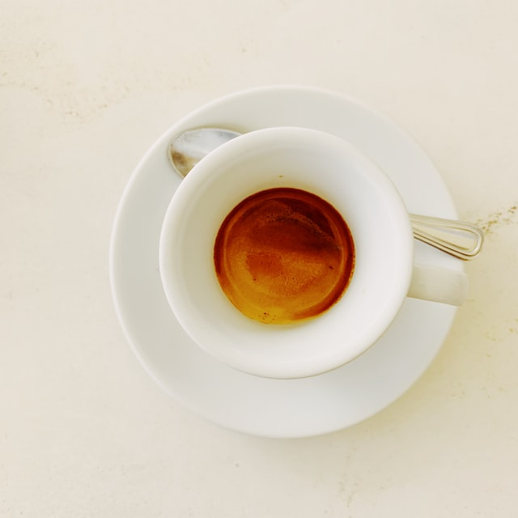
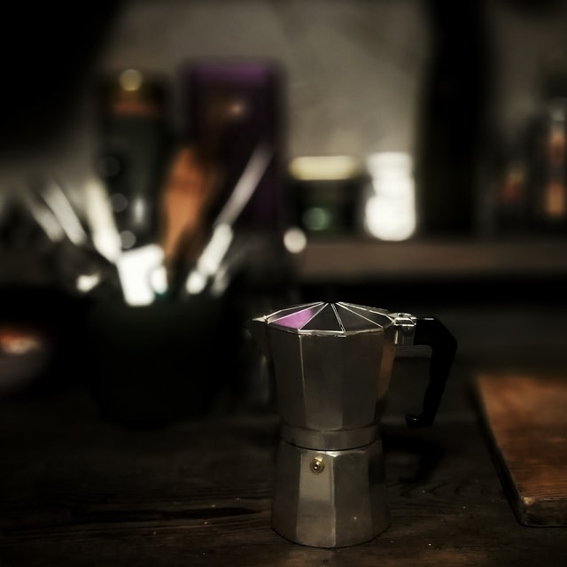

Espresso is a coffee-making method of Italian origin, in which a small amount of nearly boiling water is forced under pressure (expressed) through finely-ground coffee beans. Espresso coffee can be made with a wide variety of coffee beans and roast levels. Espresso is generally thicker than coffee brewed by other methods, has a higher concentration of suspended and dissolved solids, and has crema on top (a foam with a creamy consistency). As a result of the pressurized brewing process, the flavors and chemicals in a typical cup of espresso are very concentrated. The three dispersed phases in espresso are what make this beverage unique.
The first dispersed phase is an emulsion of oil droplets. The second phase is suspended solids, while the third is the layer of gas bubbles or foam. The dispersion of very small oil droplets is perceived in the mouth as creamy. This characteristic of espresso contributes to what is known as the body of the beverage. These oil droplets preserve some of the aromatic compounds that are lost to the air in other coffee forms. This preserves the strong coffee flavor present in the espresso. Espresso is also the base for various coffee drinks—including caffè latte, cappuccino, caffè macchiato, caffè mocha, flat white, and caffè Americano.
Espresso has more caffeine per unit volume than most coffee beverages, but because the usual serving size is much smaller, the total caffeine content is less than a mug of standard brewed coffee.[3] The actual caffeine content of any coffee drink varies by size, bean origin, roast method and other factors, but a typical serving of espresso usually contains 120 to 170 milligrams of caffeine, whereas a typical serving of drip coffee usually contains 150 to 200 mg.
